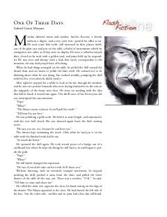

OOTish shifokori va shahar meri o'rtasidagi keskin va ramziy qarama-qarshilik haqidagi hikoya.
Gabriel Garsia Markesning ushbu hikoyasi tish shifokori Aurelio Eskovar va shahar meri o'rtasidagi keskin munosabatni tasvirlaydi. Shifokor o'zining kasbiy burchini bajarar ekan, merning og'riqli tishini anesteziyasiz sug'urib oladi va bu jarayon orqali siyosiy adolatsizlikka bo'lgan nafratini izhor qiladi. Asar insoniy qadr-qimmat va hokimiyat o'rtasidagi ziddiyatni yoritib beradi.